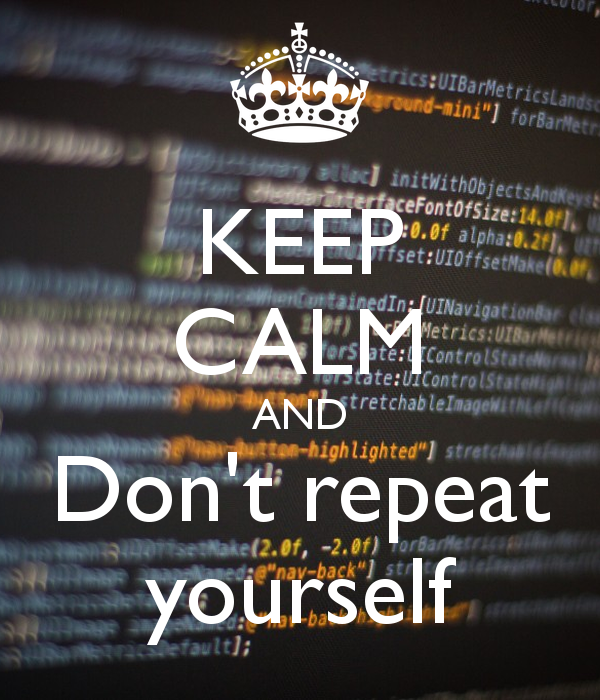
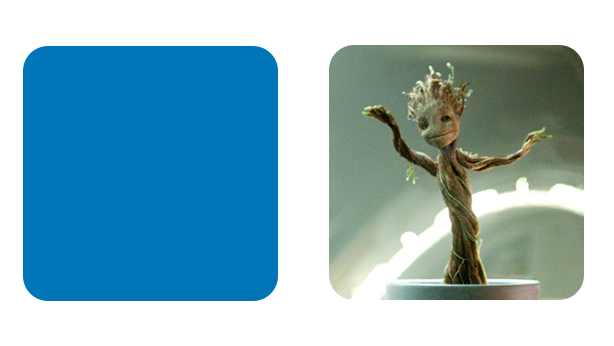

Intro to CSS
Let's Review

Anatomy of a website
Your Content
+ HTML: Structure
+ CSS: Presentation
= Your Website
A website is a way to present your content to the world, using HTML and CSS to present that content & make it look good.
Reusing code
As a general coding principle, Don't Repeat Yourself (DRY).
To reuse CSS, we use IDs and classes.
IDs vs. Classes
ID -- Should only apply to one element on a webpage, i.e., a webpage only has one footer.
The "#" is how you tell CSS "this is an id."
Class -- Lots of elements can have the same class, i.e., There can be many warnings on one webpage.
The "." is how you tell CSS "this is a class name."
Selector: ID
#footer {
property: value;
}
Selects all elements with an id of "footer".
<p id="footer">Copyright 2016</p>
The associated HTML.
Selector: Class
.warning {
color: red;
}
Selects all elements with a class of "warning".
<p class="warning">It's a trap!</p>
The associated HTML.
Enough Talk: Let's Code!
- Add an ID and/or class to the divs you have already created in your HTML.
- Add CSS rules to target these elements
Selector: Position
p em {
color: yellow;
}
Selects all em elements that are within a paragraph
<p>This is <em>important.</em></p>
The associated HTML.
Selector: Position
- Position selectors are more specific
- They look for elements inside other elements
- We seperate nested elements with a space
Selector: Position
So this code:
ul li a strong{
color: purple;
}
Means "find a strong tag inside a link inside a list item in an unordered list"
<ul>
<li><a href="programs.html">Our <strong>program</strong></a></li>
</ul>
Enough Talk: Let's Code!
- In your CSS file, try a position selector
- Remember, you need to look for an element inside another element
Cascading
Styles "cascade" down until changed
p{
color:blue;
font-family: 'Helvetica';
}
.red {
color: red;
}
#special {
font-family: Arial;
}
<p>Paragraph</p>
<p class ="red">Paragraph</p>
<p class = "red" id ="special">Paragraph</p>
Cascading priority
Your browser also assigns priority based on the specificity of the selection. More specific selectors have higher priority.
.main .sale .clearance p{ //Most specific
color: red;
}
.header .title p{
color: green;
}
.footer p{ //Least specific
color: blue;
}
Cascading priority
The tie-breaker is position. Rules lower in the file overwrite rules higher in the file
a{
background-color: yellow;
}
a{
background-color: teal;
}
a{ //This rule wins
background-color: black;
}
Comma Separated Selectors
CSS also allows you to specify a set of styles to multiple selectors at once.
#content p, footer .container p {
color: blue;
background: #333;
}
p, .list li, a {
color: red;
}
You can have as many comma separated selectors as you want. Each CSS element is separated by a space and a comma.
Enough Talk: Let's Code!
Add some comma separated CSS to your site to apply styles to multiple selectors.
Inline Vs. Block in HTML/CSS
Every HTML element has a default 'display' type. For most, they will either be 'inline' or 'block'.
Block: a block element will take up the full width of available space and will stay on its own line.
Inline: an inline element will only take up as much space as the content it has and it will not start on a new line.
Inline Vs. Block Examples
Block: div, h1, p
Inline: img, span, a
Inspect elements below to see how they act in HTML:
This is a heading
This is a paragraph

Inline Vs. Block Force them to change
Using CSS, we can change the default value for the 'display' of an HTML element. So if we wanted the default display of inline to change for an img tag, we could use this css:
img {
display: block;
}
This will cause the img tag to sit on it's own line and take up as much space as it can.
Adding a span tag
Span tags are primarily used within headings or paragraphs to manipulate certain sections of text.
<p>This is normal text <span class="highlight">but this is specially colored </span> but now it's normal text again. </p>
CSS to go with that HTML:
.highlight {
color: red;
}
Enough Talk: Let's Code!
Add a span tag with a class on it inside one of your headings or paragraphs. Then style it with CSS.
Rounded Corners
You can apply rounded corners to any HTML element by using the CSS property: border-radius. The higher the border radius number the more rounded the corner is.
A border radius is primarily added if your HTML element has a background color, border, or shadow to it. Otherwise you won't be able to see the rounded corners.
Rounded Corners Example
The first example rounds the corners of every side by 10px.
The second example (class circle) creates a circle because the border-radius is half of the width and height.
img {
border-radius: 10px;
}
.circle {
border-radius: 20px;
width: 40px;
height: 40px;
}
.box {
border-radius: 5px 10px 20px 5px;
}
The last example above shows how you can apply different border-radius amounts to different corners of the box.
Pseudo Classes
Pseudo classes are used to target specific HTML elements based on a change in state, location compared to other HTML elements, and attributes.
You can target these 'states' by adding a colon (:) after a CSS selector and then the state of the HTML element you want to target.
Here are some examples
- p:hover
- p:focus
- p:active
- p:first-child
- p:last-child
Pseudo Classes Example
In the examples below, p:hover would be used if you wanted to change the CSS for paragraphs when someone hovers over them with their mouse.
p:hover {
color: red;
}
a:hover {
color: blue;
}
A more common example is the second example above for the link element. It's good practice to give your links a defined hover state.
Enough Talk: Let's Code!
Using the ":hover" pseudo class, add a hover state to one of your html elements
Pseudo Elements
On the other hand, pseudo elements allow you to insert content into your site through CSS using :before and :after.
The :before pseudo inserts content before the HTML's content and the :after inserts content after the HTML's content.
Pseudo Elements Example
When writing the CSS for this, we always need to include the 'content' property. The property value can have text, an icon, or an image, but not HTML. After you have specified the content, you can apply any other styles that you want.
p:before {
content: 'this is added text';
color: white;
font-size: 30px;
background: blue;
}
p:after {
content: url(images/testimage.png);
}
When adding text/icon content, you have to wrap the text in quotes.
Enough Talk: Let's Code!
Using the ":before" or ":after" pseudo element, add additonal text to your site through CSS.